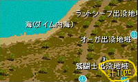

| トラブス |
|
オアシス都市アリアン
アリアン旅館
|
マップ４から引き続きの場合は
記憶１を使って冒険者協会へ戻る。
その後、左上（クエスト案内）へ進む。
称号担当官（古都冒険家協会・クエスト案内にいる）
３１１
で、直通。
トラブスの前を記憶１推奨。 |
| |
地図製作用具の材料を
手に入れる
（鷲闘士の翼羽） |
テンドペンド平原／ブリッジヘッド北部地域 |
ブリッジ↑のマップ。
対象MOBは鷲闘士。ポタ５で狩るワシと同じMOBである。
 |
| |
地図製作用具の材料を
手に入れる
（野生茶色熊の皮） |
ヘムクロス高原／高原南部地域 |
ファストポータル
ヘムクロス高原／アラク湖付近
を選び、飛んだ先から戻るのが早い。
ブラウンベアーは「高原南部」の周辺に10匹以上いる。 |
| |
地図製作用具の材料を
手に入れる
（ティンバーマンの体） |
ヘムクロス高原／高原南部地域 |
クマをUPしたら、そのまま下に降りていくとティンバーマンがいる。 |
| トラブス |
|
オアシス都市アリアン
アリアン旅館
|
記憶１を使って。
以下ブリッジとトラブスを２往復することになる。 |
| ジャック・ハンマ |
材料を持って行き、領収証をもらう |
港町ブリッジヘッド
（49,113） |
アリアン旅館を出てテレポータからブリッジへ。
もしくは
一般クエスト担当（古都冒険家協会・クエスト案内にいる）
１２３１１（ランバートの頼みごと）
でブリッジに飛び、そこから左下が早い。
ジャック・ハンマはマップ左下方面にいる。
ジャック・ハンマの前を記憶２推奨。 |
| トラブス |
|
オアシス都市アリアン
アリアン旅館
|
記憶１を使って。
記憶のない人は冒険家協会（ブリッジ、古都どちらでも可）に行き、
協会テレポータ（移動に４万Ｇ必要）
１２１
でアリアン支部に飛ぶと早い。 |
| ジャック・ハンマ |
届いていない荷物を受け取りに行く |
港町ブリッジヘッド
（49,113） |
記憶２を使って。 |
| トラブス |
|
オアシス都市アリアン
アリアン旅館
|
記憶１を使って。
もしくは
協会テレポータ（移動に４万Ｇ必要）
１２１
で。 |